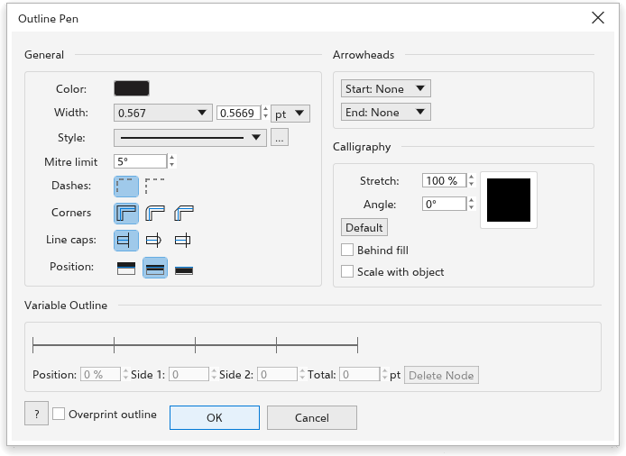

Definir contornos
O contorno é a linha desenhada ao longo da borda de um objeto. Você define a cor, a largura, o estilo, os cantos, as pontas e as setas na seção Contorno do painel Propriedades.
Abrir as configurações de contorno
- A ferramenta Caneta de contorno (F12) abre a caixa de diálogo Outline Pen com todas as configurações do contorno: cor, largura e sua unidade, estilo, limite de esquadria, tracejados, cantos, terminações, posição, pontas de seta, caligrafia, Atrás do preenchimento, Dimensionar com o objeto, os nós de largura do contorno variável e Overprint outline. OK muda só o que você mudou, em todos os objetos selecionados; sem nada selecionado, define o contorno dos objetos novos.

- Clique duas vezes na parte do contorno da barra de status.
- Clique com o botão direito em uma cor da paleta para colorir o contorno da seleção.
Configurações da caneta de contorno
- Largura: 0,2 mm para novos objetos. Linha fina desenha uma linha com um ponto de tela ou de impressora de largura em qualquer zoom.
- Pintura: o contorno pode ser pintado como um preenchimento: nenhum, cor uniforme, gradiente, padrão, textura ou malha. Veja Preenchimentos. Linhas finíssimas e setas mantêm a cor simples do contorno.
- Extremidades, as pontas das linhas abertas: Reta (de início), Arredondada ou Quadrada.
- Cantos: Angular (de início), Arredondado ou Chanfrado.
- Traço: Contínuo, Tracejado, Pontilhado ou Traço ponto. Os tracejados crescem com a largura.
- Setas, no Início e no Fim das linhas abertas, preenchidas com a cor do contorno. Para criar a sua, desenhe-a, selecione-a e escolha Objeto > Criar > Ponta de seta.
- O alongamento da ponta (0,1 a 1) e o ângulo da ponta fazem um contorno caligráfico: mais fino de um lado da ponta que do outro, como uma caneta chata.
- Atrás do preenchimento desenha o contorno por baixo do preenchimento, então só a metade externa aparece.
- Dimensionar com o objeto: a largura cresce e diminui quando você redimensiona o objeto.
Para transformar um contorno em um objeto que pode ser preenchido, escolha Objeto > Converter contorno em objeto (Ctrl+Shift+Q). As configurações dos novos objetos são explicadas em Estilos de objeto e padrões.
Cor do contorno
A ferramenta Cor do contorno (Shift+F12) abre o painel Cor para escolher a cor do contorno da seleção. Veja O painel Cor.
Contorno variável
A ferramenta Contorno variável, no submenu Forma, torna um contorno mais grosso ou mais fino ao longo do comprimento com nós de largura.
- Selecione um objeto com contorno, como uma curva, um retângulo ou uma elipse. Um objeto sem contorno recebe um fino.
- Escolha a ferramenta Contorno variável.
- Arraste através do contorno: um nó de largura é acrescentado onde você começa, e o contorno chega até o ponteiro dos dois lados. Mantenha Shift (ou Alt) pressionado ao começar a arrastar para mudar só o lado onde está o ponteiro. Shift+clique escolhe uma sequência de nós e Ctrl+clique acrescenta um; um arraste então muda todos os nós escolhidos.
- Acrescente mais nós do mesmo jeito. Entre os nós, a largura muda suavemente.
Para mudar um nó, clique nele e digite a Largura esquerda e a Largura direita na barra de propriedades (a esquerda fica à esquerda da direção do caminho). Excluir nó ou Delete remove o nó selecionado, e Limpar contorno variável devolve o contorno simples.